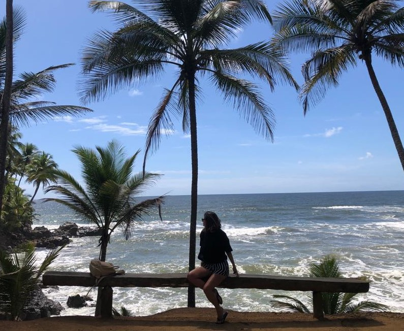

Eu!
Tenho 30 anos, nasci em SP e moro na praia.
Sou formada em Gastronomia, segui a área por poucos anos até que tive
uma oportunidade em trabalhar com administração, que acabou me trazendo muita experiencia com público e pessoas no ambiente corporativo. Mas foi na pandemia que comecei a ampliar meus horizontes e decidi mudar de carreira e também de vida.
Moro no litoral a 3 anos e encontrei mais saúde e paz, além de uma bela paisagem todos os dias. Com isso percebi que ter um trabalho
diferente em que eu poderia unir uma vida melhor e uma experiência nova.
Por fim, busco uma oportunidade de estagiar e trabalhar com UX/UI e também Front-End, me considero uma pessoa comunicativa e cheia de vontade de sempre acrescentar.
OBRIGADA !
